1 Levande celler, nukleinsyror och proteiner
Väte är en lätt, luktfri gas som, om den får tillräckligt med tid, förvandlas till människor.
Så skrev den brittisk-amerikanske kosmologen Edward Harrison 1995. Det låter som ett skämt, men det är en ganska exakt sammanfattning av vad vi vet om universums och livets historia. Allt levande, också vi själva, består av atomer som en gång bildades i stjärnor. Under miljarder år har de satts ihop till allt större och mer komplicerade molekyler, och till sist till levande celler.
Det här kapitlet handlar om de molekyler som gör en cell levande. Det finns tre slag som är viktigare än alla andra: DNA, RNA och proteiner. Och det finns tre processer som binder ihop dem: replikation, när DNA kopieras, transkription, när en bit av DNA skrivs av till RNA, och translation, när RNA översätts till protein. Detta är grunden för allt som händer i en cell, och därmed för resten av boken.
1.1 Från väte till människor
Innan vi går in i cellen ska vi följa Harrisons mening från början. Var kommer de atomer ifrån som livet är byggt av, och hur kan de första byggstenarna till livets molekyler ha bildats, långt innan det fanns något levande? För att svara behöver vi först några ord om atomer och molekyler.
Atomer och molekyler
Allt omkring oss är uppbyggt av atomer. En atom består av en liten kärna, med positiv laddning, omgiven av ett moln av negativt laddade elektroner. Det finns drygt hundra sorters atomer, och varje sort kallas ett grundämne: väte, kol, kväve, syre, järn och så vidare. Grundämnena betecknas med en eller två bokstäver, till exempel H för väte, C för kol, N för kväve och O för syre.
Atomer kan sitta ihop med varandra genom kemiska bindningar. En grupp av atomer som hålls ihop av sådana bindningar kallas en molekyl. En vattenmolekyl består till exempel av två väteatomer och en syreatom, och skrivs därför H2O.
Molekylerna i levande varelser är byggda kring kolatomer. En kolatom kan binda till upp till fyra andra atomer, och därför kan kolatomer bilda långa kedjor och ringar. Sådana kolbaserade molekyler kallas organiska molekyler. Livets molekyler består nästan bara av sex grundämnen: kol, väte, syre, kväve, fosfor och svavel.
Tunga grundämnen bildas i stjärnor
Av livets sex grundämnen fanns bara ett från början. När universum var ungt fanns nästan bara väte och lite helium. Resten har bildats i stjärnor. Gasmolnen drog så småningom ihop sig till galaxer och stjärnor. Inne i stjärnorna smälte väteatomernas kärnor samman till helium, och senare till tyngre grundämnen. När de första stjärnorna dog exploderade många av dem som supernovor, och då slungades tyngre grundämnen ut i rymden. Där blev de en del av nya gasmoln, som bildade nya stjärnor, som i sin tur bildade ännu tyngre grundämnen. Universum består fortfarande mest av väte, men efter många sådana omgångar fanns tillräckligt mycket kol, kväve och syre för att liv skulle kunna uppstå.
Organiska molekyler finns redan i rymden
När grundämnena väl fanns kunde de börja sättas ihop till större molekyler. Det steget kräver inte en planet: det kan börja redan ute i rymden.
Rymden mellan stjärnorna är nämligen inte tom. I de stora moln av gas och stoft där nya stjärnor bildas finns små stoftkorn av tyngre grundämnen, och där finns vatten, som kan frysa fast på kornen som is. I isen kan små molekyler som ammoniak, metanol, kolmonoxid och koldioxid finnas lösta. När isen träffas av ultraviolett ljus från en närliggande stjärna får molekylerna extra energi och kan börja reagera med varandra och bilda större molekyler.
I laboratorieförsök som efterliknar sådana iskorn har man fått fram bland annat sockret ribos, en molekyl med fem kolatomer som ingår i RNA, som vi ska se. Ribos har också hittats i meteoriter. Livets byggstenar är alltså inte unika för jorden, och de kan bildas helt utan hjälp av levande organismer.
1.2 Livet på den unga jorden
På jorden kunde samma slags kemi gå ännu längre. Det här avsnittet handlar om hur förhållandena på den unga jorden kan ha gett upphov till livets byggstenar, och om ett berömt experiment som visade att det går.
Jorden bildades för ungefär 4,5 miljarder år sedan, när stoft och större stenar i solsystemet drogs samman av tyngdkraften. Den unga jorden var en ogästvänlig plats. Det fanns ingen fri syrgas i luften. Syret fanns i stället bundet i vatten och koldioxid, och kanske fanns också enkla ämnen som ammoniak, väte och metan (se fördjupningen nedan). Men det fanns gott om energi: jorden var het, vulkaner fick utbrott, blixtar slog ned och solen strålade.
Med så mycket energi kunde de enkla molekylerna reagera med varandra och bilda mer komplicerade ämnen, som socker och aminosyror, de byggstenar som proteiner består av. Det är samma slags byggstenar som vi i dag hittar i allt levande. Och livet tycks ha kommit igång tidigt: spår av liv i de äldsta bergarterna tyder på att det fanns redan för omkring 3,7 miljarder år sedan, ganska snart efter att jorden hade svalnat.
Millers experiment
Kan livets byggstenar verkligen bildas av sig själva? År 1952 gjorde den amerikanske kemistudenten Stanley Miller, som arbetade hos Harold Urey i Chicago, ett försök som blivit klassiskt (Figur 1.1). Han tänkte sig att den tidiga jordens atmosfär bestod av vattenånga, metan, ammoniak och vätgas. Därför blandade han dessa gaser i en glaskolv och lät elektriska gnistor slå igenom blandningen, som konstgjorda blixtar.
Apparaten var byggd som ett kretslopp. Gaserna kyldes så att vattenångan blev flytande och tog med sig de molekyler som hade bildats. Vattnet rann till en annan kolv, där det värmdes upp och förångades igen, och ångan fördes tillbaka till gnistorna. Så fortsatte det i ungefär en vecka.
När Miller sedan analyserade vätskan hittade han flera aminosyror. Det var ett mycket direkt bevis för att livets byggstenar kan bildas under enkla förhållanden, utan hjälp av något levande. Senare försök av samma slag har också gett socker och de baser, ytterligare en sorts byggstenar, som ingår i DNA och RNA. Experimentet blev starten för ett helt forskningsfält, prebiotisk kemi: läran om hur kemin såg ut innan det fanns liv.
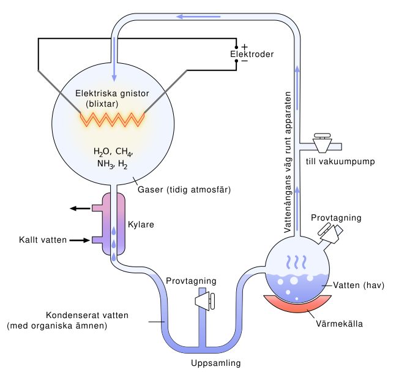
Millers försök visar hur byggstenarna kan ha bildats. Men steget från en soppa av byggstenar till en levande cell är långt, och ingen vet riktigt hur det gick till. Den första förutsättningen var att det uppstod någon molekyl som kunde göra kopior av sig själv. En kopia blev två, två blev fyra och så vidare. Kopiorna blev inte alltid perfekta, och ibland fick en kopia nya egenskaper som gjorde att den kopierades ännu bättre. Sådana kopior blev med tiden fler än de andra. Då hade den tidiga kemin fått det som driver all evolution: ärftlighet (kopiorna liknar originalet), variation (de är inte helt lika) och urval (de som kopieras bäst blir flest). Hur detta ledde vidare till de första cellerna är fortfarande en av naturvetenskapens stora öppna frågor.
1.3 Allt levande består av celler
Hur de första cellerna uppstod vet vi alltså inte. Men resultatet känner vi: alla organismer som lever i dag är uppbyggda av en eller flera celler. En cell är en liten avgränsad behållare, omgiven av ett tunt membran, som kan ta upp näring, växa och dela sig. Cellerna finns i två huvudtyper, som beskrivs närmare i Avsnitt 2.2:
- Prokaryota celler, till exempel bakterier, är små och saknar cellkärna. Deras DNA ligger fritt i cellens inre. Det var den första sortens cell som uppstod. Bakterier ser enkla ut, men den som tittar närmare på deras molekyler finner att de är allt annat än enkla.
- Eukaryota celler, som bygger upp djur, växter och svampar, är större och har sitt DNA inneslutet i en cellkärna. De har också andra avgränsade utrymmen, till exempel mitokondrierna, där cellen får sin energi.
Eukaryota celler har en gång utvecklats ur prokaryota och har fått en mer komplicerad inre organisation. Det har gjort att de kan bli större och, framför allt, slå sig samman till flercelliga organismer med många olika specialiserade celltyper.
Ändå är det mest slående hur lika de två celltyperna är på molekylär nivå. De grundläggande molekylära processerna är i stort sett desamma i en bakterie och i en människa. Det är dessa processer, det “molekylära livet” inuti cellerna och på deras yta, som den här boken handlar om.
1.4 Tre molekyler och tre processer
Vad är det då som händer inuti cellerna? I inledningen nämnde vi de tre molekylslag och de tre processer som allt bygger på. Det här avsnittet ger en översikt: vad molekylerna heter, vilka uppgifter de har och hur informationen flödar mellan dem. Resten av kapitlet går sedan igenom dem en i taget.
DNA, RNA och protein
Namnet DNA är en förkortning av det engelska deoxyribonucleic acid, på svenska deoxiribonukleinsyra. Namnet säger något om molekylen. Ribo syftar på sockret ribos, som vi mötte i rymden, och deoxi betyder “utan syre”: sockret i DNA är en ribos som saknar en av sina syreatomer. Nukleinsyra kommer av att ämnet först hittades i cellkärnan (latin nucleus) och är en svag syra. RNA, ribonukleinsyra, är en mycket närbesläktad molekyl, där sockret är vanlig ribos. Tillsammans kallas DNA och RNA för nukleinsyror. Den syreatom som skiljer deras socker åt har, som vi ska se, stora följder. (Det finns också en skillnad i en av baserna, som vi återkommer till.)
De tre molekylslagen har helt olika uppgifter:
- DNA lagrar informationen. Arvsmassan, alla de instruktioner som behövs för att bygga upp och driva en cell, finns nedskriven i DNA. DNA är cellens hårddisk.
- Proteinerna utför arbetet. De sätter fart på kemiska reaktioner, de bygger upp och bryter ned molekyler, de transporterar ämnen och de ger cellen dess form. Proteinerna är cellens maskiner.
- RNA för informationen vidare. För att instruktionerna i DNA ska kunna användas för att bygga proteiner behövs en mellanhand. Den mellanhanden är RNA.
En cell kan alltså liknas vid en liten kemisk fabrik, eller vid en dator: en del innehåller instruktionerna, och den delen styr maskiner som utför jobbet. När allt detta är på plats kan cellen sköta sin ämnesomsättning, växa och dela sig, och så småningom kan celler gå samman till hela organismer. Och all den information som behövs för att bygga en organism finns inskriven i den artens DNA.
Den centrala dogmen
Informationen i cellen flödar normalt i en bestämd riktning (Figur 1.2):
- Replikation (DNA → DNA). DNA används som mall för att göra en ny, likadan DNA-molekyl. Det sker innan en cell delar sig, så att båda de nya cellerna får en egen kopia av arvsmassan.
- Transkription (DNA → RNA). En bit av DNA används som mall för att bygga en RNA-molekyl med samma information. Ordet betyder “avskrift”.
- Translation (RNA → protein). RNA-molekylen används som instruktion för att foga ihop ett protein. Ordet betyder “översättning”, och det är just vad det är: en översättning från nukleinsyrornas språk till proteinernas.
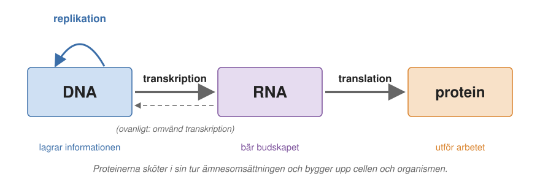
Den här principen formulerades av den brittiske fysikern och molekylärbiologen Francis Crick i slutet av 1950-talet och kallas sedan dess den centrala dogmen (molekylärbiologins centrala dogm). Crick menade framför allt att informationen aldrig går tillbaka från protein till DNA eller RNA. Däremot kan RNA ibland skrivas tillbaka till DNA: vissa virus, till exempel HIV, har ett enzym som gör det. Det kallas omvänd transkription och är ovanligt. Det bryter inte mot dogmen, eftersom informationen då går mellan två nukleinsyror och inte tillbaka från ett protein.
Det normala flödet går alltså från DNA via RNA till protein. På så sätt styr DNA indirekt vilka proteiner som tillverkas, och proteinerna styr i sin tur ämnesomsättningen och allt annat som händer i cellen.
Tre kedjemolekyler
DNA, RNA och proteiner har en sak gemensamt: de är alla långa kedjor av mindre byggstenar som är hopkopplade en efter en, som pärlor på ett band. Men kedjorna beter sig mycket olika.
- DNA består i cellerna nästan alltid av två kedjor, som kallas strängar, tvinnade om varandra i en dubbelspiral (eller dubbelhelix). Var man än tar DNA ifrån, och vilken bit av DNA man än tittar på, ser det likadant ut. DNA är regelbundet och enkelt byggt.
- RNA består för det mesta av en enda kedja. Kedjan kan vika sig så att en del av den binder till en annan del och bildar korta spiralformade partier. Varje sorts RNA-molekyl får på så sätt sin egen form. RNA ligger någonstans mittemellan: det har en del av DNA:s regelbundenhet, men också en del av proteinernas variation.
- Proteiner byggs också av en enda kedja i taget (även om flera kedjor ibland går ihop till ett större protein), men byggstenarna är 20 olika aminosyror. Beroende på vilka aminosyror kedjan består av, och i vilken ordning, kan den vecka ihop sig till nästan vilken form som helst. Det är därför proteinerna är så användbara: de kan bli enzymer, pumpar, motorer, byggmaterial och mycket annat. I dag kan forskare till och med konstruera kedjor som veckar sig till former som inte finns i naturen, något vi återkommer till i Kapitel 5 och Kapitel 16.
1.5 DNA: en dubbelspiral
Dubbelspiralen har blivit en symbol för hela biologin. Den finns som skulptur, i reklam och på bokomslag: så fort något ska handla om livets hemligheter dyker den upp. Men vad är det egentligen den visar? Svaret är en molekyl vars byggnad på en gång förklarar hur arvsmassan lagras och hur den kan kopieras.
En spiraltrappa av baspar
DNA kan liknas vid en spiraltrappa. De två ledstängerna är de två strängarna, och trappstegen är par av byggstenar, ett från varje sträng, som håller ihop i mitten.
Varje byggsten, en nukleotid, består av tre delar (Figur 1.3):
- en sockermolekyl, deoxiribos,
- en fosfatgrupp, en fosforatom omgiven av syreatomer, och
- en kvävebas, oftast bara kallad bas, som är en platt ring av kol- och kväveatomer.
Socker och fosfat växlar längs strängen: socker, fosfat, socker, fosfat. De bildar strängens ryggrad, ledstången i trappan, och de ser alltid likadana ut. Det som varierar är basen, som sticker ut från varje socker in mot mitten av spiralen. Det finns bara fyra baser i DNA: adenin (A), guanin (G), cytosin (C) och tymin (T). Adenin och guanin är lite större, med två ringar, medan cytosin och tymin bara har en ring.
De två strängarna löper åt motsatta håll, som två körfält på en väg. För att hålla reda på riktningen kallas strängarnas ändar 5′-änden och 3′-änden (uttalas “fem prim” och “tre prim”), efter numreringen av kolatomerna i sockret. Det får betydelse när DNA kopieras och läses.
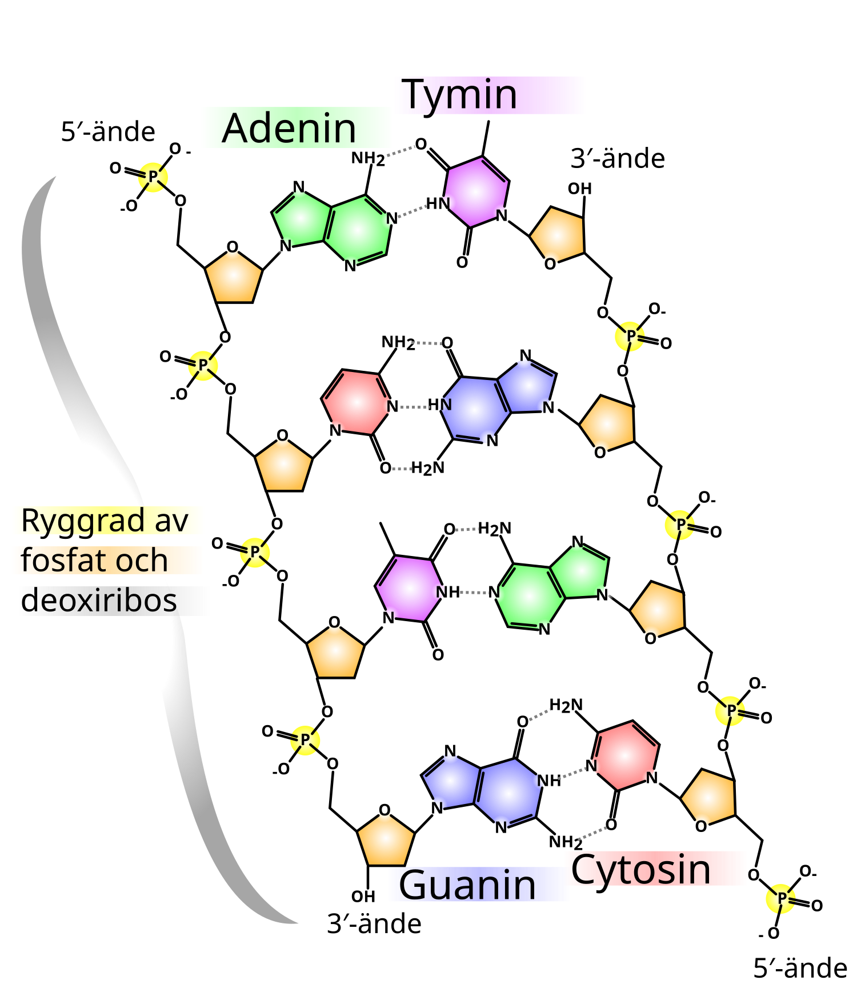
Basparningen är hemligheten
Baserna i de två strängarna parar ihop sig på ett mycket bestämt sätt:
- A passar bara ihop med T, och
- G passar bara ihop med C.
I varje par möts alltså en stor bas med två ringar och en liten bas med en ring. Därför är alla trappsteg lika långa, och spiralen blir jämn.
Men det är inte bara storleken som avgör. Baserna hålls ihop av vätebindningar: en väteatom som sitter på den ena basen dras till en syre- eller kväveatom på den andra. Samma slags bindningar håller ihop vattenmolekylerna i is. Vätebindningar är svaga var för sig, men det blir många av dem längs en lång DNA-molekyl. Atomerna på A och T sitter på precis rätt ställen för att bilda två vätebindningar med varandra, och atomerna på G och C för att bilda tre. Försöker man para ihop till exempel A med C passar baserna inte lika bra: bindningarna blir färre och svagare, och paret får inte rätt form i spiralen. Sådana felpar uppstår ibland, och de är en orsak till fel när DNA kopieras.
Följden är viktig. De två strängarna i en DNA-molekyl är inte identiska, men de passar ihop som en form och dess avgjutning. Man säger att de är komplementära. Står det ATGC på den ena strängen så måste det stå TACG mitt emot på den andra. Känner man ordningen av baserna på den ena strängen, DNA:ts sekvens, så vet man därför också sekvensen på den andra. Det är därför man nästan alltid bara skriver ut den ena strängens sekvens: den andra följer automatiskt. Vilken av de två man väljer att skriva är en överenskommelse.
Det var James Watson och Francis Crick som 1953 kom fram till att DNA är en dubbelspiral av två strängar som hålls ihop av baspar, bland annat med hjälp av Rosalind Franklins röntgenbilder av DNA. De noterade genast att basparningen antydde hur arvsmassan kan kopieras, något som dittills hade varit en gåta (mer om upptäckten i Avsnitt 11.2.2).
1.6 Replikation: DNA kopieras
Innan en cell delar sig måste hela dess DNA kopieras, så att varje dottercell får en egen fullständig uppsättning. Basparningen gör det möjligt (Figur 1.4). De två strängarna dras isär, och var och en av dem används som mall för att bygga en ny sträng. Där det står ett A på mallen sätts ett T in i den nya strängen, där det står ett G sätts ett C in, och så vidare. Resultatet blir två DNA-molekyler som är exakt likadana som den ursprungliga. Var och en består av en gammal och en ny sträng.
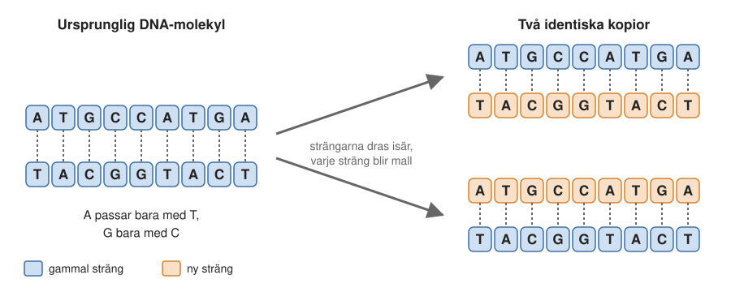
I cellen sköts arbetet av stora proteinmaskiner, enzymer, som är proteiner som sätter fart på kemiska reaktioner (mer om dem i Kapitel 4). Ett enzym sätter sig på DNA-spiralen och öppnar den, som ett blixtlås som dras upp. Efter det följer ett annat enzym, DNA-polymeras, som plockar upp byggstenar en efter en ur cellvätskan, där de finns färdiga, och kopplar ihop dem till en ny sträng enligt basparningsreglerna. Eftersom de två strängarna i spiralen löper åt motsatta håll blir detaljerna en aning krångliga, men principen är enkel: varje sträng är mall för sin nya partner. Exakt hur maskineriet fungerar mekaniskt är fortfarande ett livligt forskningsområde.
1.7 Information i en följd av bokstäver
All information som behövs för att bygga upp och driva en cell finns alltså lagrad i ordningen av baser längs DNA-molekylen. Det är samma princip som när man förr lagrade data på magnetband, som en lång följd av ettor och nollor. Eller som i ett skriftspråk, där innehållet ligger i ordningen av bokstäverna. DNA har ett alfabet med bara fyra bokstäver, A, C, G och T, men eftersom molekylen är så lång räcker det långt.
Hur långa är då molekylerna? En mänsklig cell innehåller ungefär 3 miljarder baspar DNA i varje uppsättning av arvsmassan, uppdelade på 23 kromosomer. Varje kromosom är en enda, mycket lång DNA-molekyl, i genomsnitt drygt 100 miljoner baspar lång. De flesta av kroppens celler har två uppsättningar, en från mamman och en från pappan, alltså 23 par kromosomer.
Om man drog ut allt DNA i en enda cell till en rak tråd skulle den bli ungefär två meter lång, men den ryms ändå i en cellkärna som är några tusendels millimeter stor. Biologer brukar säga att allt DNA i en människa skulle räcka till månen och tillbaka. Det är snarare en underdrift: lagt i en enda tråd skulle det räcka till solen och tillbaka många gånger om.
DNA är alltså en utmärkt informationsbärare. Det tar mycket liten plats och är kemiskt stabilt: baserna är väl skyddade inne i dubbelspiralen, och de skador som ändå uppstår kan cellen laga. Men stabiliteten har ett pris. En molekyl där så lite händer kan inte heller utföra något arbete: DNA kan till exempel inte fungera som ett enzym och sätta fart på kemiska reaktioner. Det kan inte göra särskilt mycket mer än att lagra information. Det är som ett datorminne utan en processor.
Ritningar och styrsignaler
Den information som DNA lagrar är av två slag. Det första är ritningar till proteiner. Ta hemoglobin, proteinet i de röda blodkropparna som transporterar syre från lungorna ut i kroppen. Hemoglobin består av fyra kedjor av aminosyror, var och en med omkring 140 aminosyror. För att det ska bli hemoglobin måste aminosyrorna i varje kedja sitta i exakt rätt ordning. Hur vet cellen vilken ordningen är? På ett bestämt ställe på en av våra kromosomer finns en bit DNA vars sekvens anger just den ordningen. En sådan bit av DNA, som innehåller ritningen till ett protein, kallas en gen. Människan har ungefär 20 000 sådana gener, utspridda på kromosomerna.
Det andra är styrsignaler, som talar om när en gen ska användas och hur mycket. Att slå på en gen betyder att cellen börjar skriva av den och tillverka det protein som den är ritning till; hur avskriften går till ser vi i nästa avsnitt. DNA innehåller alltså inte bara ritningarna, utan också programmet för när cellen ska växa, dela sig eller utföra olika uppgifter.
Ett exempel är vad som händer om man reser upp på hög höjd, där luften innehåller mindre syre. Kroppen märker syrebristen. I njuren sätter sig då ett protein, HIF, på DNA intill genen för hormonet erytropoetin (EPO), som en person med en flagga som vinkar: “kom hit, här ska det kopieras”. EPO får benmärgen att bilda fler röda blodkroppar, och i dem slås generna för hemoglobin på. (För upptäckten av hur celler känner av syrebrist fick William Kaelin, Peter Ratcliffe och Gregg Semenza Nobelpriset i fysiologi eller medicin 2019.)
Proteiner som HIF, som sätter sig på DNA och slår på eller av gener, kallas transkriptionsfaktorer. Hela tiden slås olika gener på och av på det här sättet, och det är ett av skälen till att en levercell och en muskelcell kan vara så olika fast de har samma DNA. Hur ett protein letar upp rätt ställe på DNA för att slå på en gen ser vi i Avsnitt 6.9.1, och hur man kan läsa och ändra gener med genteknik är ämnet för Kapitel 3.
1.8 Transkription: från DNA till RNA
Det första steget i att använda en gen är transkription. Ett enzym som heter RNA-polymeras sätter sig på DNA där genen börjar, öppnar dubbelspiralen och använder den ena strängen som mall för att bygga en RNA-kedja, med hjälp av samma basparningsregler som vid replikationen. Den nya RNA-kedjan lossnar sedan från DNA, och DNA-spiralen sluter sig igen. Man får en kopia av genen, men i form av RNA (Figur 1.5).
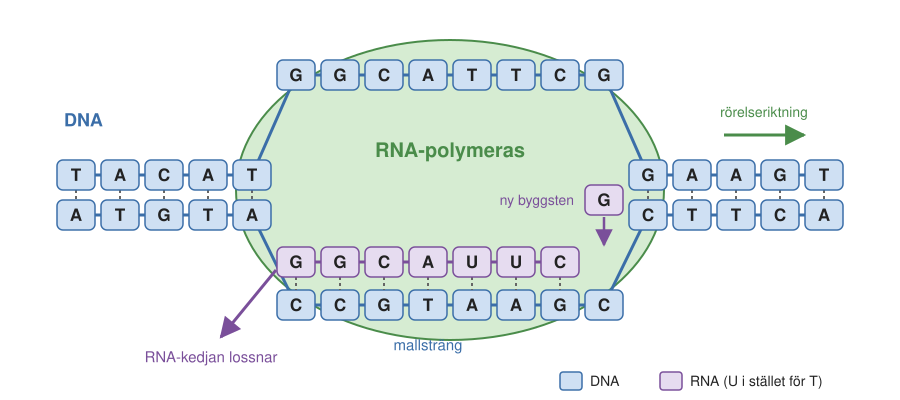
RNA skiljer sig från DNA på två sätt:
- Sockret i RNA är ribos, som har en syreatom (i form av en OH-grupp) mer än sockret i DNA. Den extra OH-gruppen gör RNA mer kemiskt reaktivt och mindre stabilt än DNA.
- Basen tymin (T) är i RNA ersatt av en mycket lik bas, uracil (U). Uracil saknar en liten grupp med en kolatom och tre väteatomer som tymin har, men parar ihop sig med A på precis samma sätt.
Dessutom är RNA för det mesta enkelsträngat, eftersom bara den ena DNA-strängen skrivs av. RNA-kedjan kan i stället vika ihop sig med sig själv och få sin egen form.
Den RNA-kopia som bär ritningen till ett protein kallas budbärar-RNA (eng. messenger RNA), förkortat mRNA. Namnet säger vad det gör: det är en brevbärare som hämtar budskapet från DNA och bär det till den plats där proteinet ska tillverkas. I eukaryota celler sker transkriptionen inne i cellkärnan, och mRNA förs sedan ut i cellvätskan utanför. I bakterier, som saknar cellkärna, kan proteintillverkningen börja medan mRNA fortfarande håller på att skrivas av.
Det finns också andra sorters RNA, med andra uppgifter. Två av dem, tRNA och ribosomalt RNA, ska vi möta strax. Kemiskt är de av samma slag som mRNA; det är uppgifterna som skiljer.
1.9 Translation: från RNA till protein
Nu kommer vi till det som kan kallas livets kärna: hur en följd av baser i mRNA översätts till en följd av aminosyror i ett protein.
Ribosomen, tRNA och kodon
Översättningen sker i en stor molekylär maskin som heter ribosom. mRNA-molekylen binder till ribosomen, som läser av den tre baser i taget. Varje sådan grupp om tre baser kallas ett kodon och motsvarar en aminosyra.
Men baser och aminosyror passar inte ihop direkt. Det behövs en mellanhand, och det är en annan sorts RNA, transfer-RNA eller tRNA (Figur 1.6). En tRNA-molekyl är en kort RNA-kedja som veckat ihop sig till en bestämd form. I ena änden bär den en aminosyra. I den andra änden har den tre baser som kallas antikodon. Varje sorts tRNA bär alltid samma sorts aminosyra och har alltid samma antikodon. Det tRNA som bär aminosyran fenylalanin har till exempel antikodonet AAG. Enligt basparningsreglerna, där A i RNA parar med U, passar det ihop med kodonet UUC på mRNA. (Antikodonet är här skrivet i samma riktning som det mRNA det ligger mot; i läroböcker skrivs det ofta baklänges, GAA.)
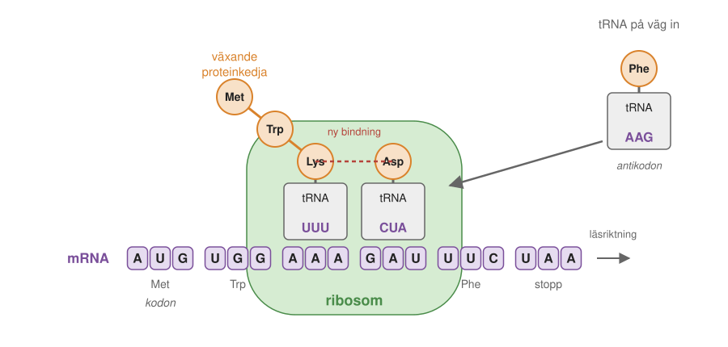
Ribosomen har två huvudplatser för tRNA bredvid varandra, och en tredje där det tomma tRNA:t lämnar. Så här går det till:
- Ribosomen håller fram ett kodon på mRNA och väntar tills ett tRNA med ett antikodon som passar har letat sig dit.
- Bredvid sitter redan ett tRNA som håller i den proteinkedja som har byggts hittills.
- Ribosomen kopplar ihop kedjan med den nya aminosyran. Nu sitter hela kedjan på det nya tRNA:t, som har blivit en aminosyra längre.
- Det tomma tRNA:t lämnar ribosomen, och ribosomen flyttar sig tre baser längre fram på mRNA. Ett nytt kodon blir fritt, och allt börjar om.
På så sätt bestämmer ordningen av kodon på mRNA i vilken ordning tRNA kommer in, och därmed i vilken ordning aminosyrorna kopplas ihop. Det är ett stort maskineri för att sätta ihop små aminosyror i rätt ordning, men det fungerar.
Det tomma tRNA:t går inte förlorat. Ett särskilt enzym laddar det med en ny aminosyra av samma sort, och det kan användas igen.
Start och stopp
Proteinet måste börja och sluta på rätt ställe. Ribosomen letar sig fram längs mRNA tills den hittar kodonet AUG, startkodonet. Där börjar den, och den första aminosyran blir alltid metionin. Sedan läser den kodon för kodon tills den når ett av de tre stoppkodonen, UAA, UAG eller UGA. Till dem finns inget tRNA. I stället binder ett protein som känner igen stoppkodonet och får ribosomen att släppa den färdiga proteinkedjan.
När proteinet väl har börjat byggas går det fort. En bakterie kan koppla ihop 10–20 aminosyror per sekund, och i våra celler går det något långsammare. Ett typiskt protein med 300–400 aminosyror tar alltså från en halv minut till drygt en minut att bygga. Men en bakterie har tiotusentals ribosomer och en av våra celler miljontals, som arbetar samtidigt, och flera ribosomer kan läsa samma mRNA efter varandra.
Den genetiska koden
Tabellen över vilka kodon som motsvarar vilka aminosyror kallas den genetiska koden (Figur 1.7). Att just kodonet UUC hör ihop med fenylalanin är inget man kunde ha räknat ut i förväg. Sambandet mellan de 64 möjliga kombinationerna av tre baser och de 20 aminosyrorna fick tas fram genom experiment, och det skedde under 1960-talet. Bland dem som löste gåtan fanns Marshall Nirenberg och Har Gobind Khorana, som tillsammans med Robert Holley fick Nobelpriset i fysiologi eller medicin 1968.
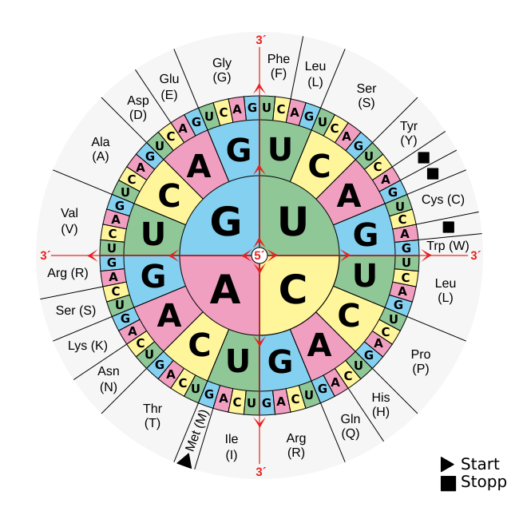
Eftersom det finns 64 kodon men bara 20 aminosyror motsvaras de flesta aminosyror av flera kodon. Fenylalanin har till exempel två, UUU och UUC, och lysin har AAA och AAG. Ofta är det bara den tredje basen som skiljer.
Den genetiska koden är i stort sett densamma i allt levande, från de enklaste bakterierna till människan. Det gäller hela maskineriet som vi har beskrivit i det här kapitlet. Enzymerna kan vara mer eller mindre komplicerade, men principerna och molekylerna är desamma. Det är ett starkt tecken på att allt liv på jorden har ett gemensamt ursprung.
Koden är också ett ovärderligt verktyg för forskare. Ofta känner man bara DNA-sekvensen för en gen. Med hjälp av den genetiska koden kan man då genast räkna ut vilken aminosyrasekvens proteinet har, utan att någonsin ha sett själva proteinet.
Ribosomen: en molekylär maskin
Ribosomen är en av cellens största och viktigaste maskiner (Figur 1.8). Den består av två delar, en liten subenhet och en stor subenhet, som sluter sig om mRNA:t. Båda är byggda av långa RNA-kedjor, så kallat ribosomalt RNA, och dussintals proteiner. Den lilla subenheten ser till att rätt tRNA paras ihop med rätt kodon. I den stora kopplas aminosyrorna ihop, och den växande proteinkedjan letar sig ut genom en tunnel i den stora subenheten.
Det märkliga är att det är RNA, inte protein, som sköter själva hopkopplingen. Det stämmer med idén om en RNA-värld, som vi mötte i fördjupningen om Millers försök. Ribosomen är alltså ett minne från en tid då RNA kanske hade fler uppgifter än i dag. För att ha kartlagt ribosomens struktur atom för atom fick Venkatraman Ramakrishnan, Thomas Steitz och Ada Yonath Nobelpriset i kemi 2009.
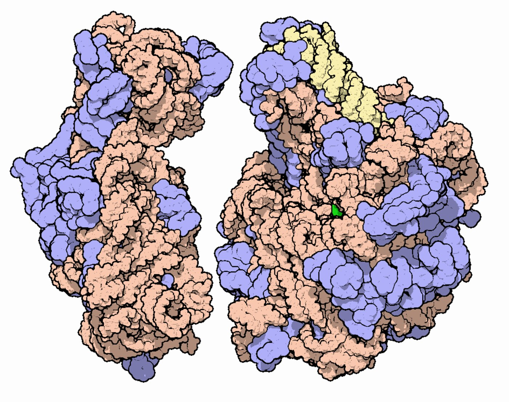
Ribosomen innehåller hundratusentals atomer, men den är ändå mycket liten: omkring 20–30 nanometer i diameter. En nanometer är en miljarddels meter, eller en miljondels millimeter. För att få en känsla för skalan kan man tänka sig att man förstorar en ribosom till en stor badbolls storlek. Om man sedan förstorar badbollen lika många gånger blir den ungefär 12 000 kilometer i diameter, ungefär lika stor som jorden. Så små är livets molekyler.
Därför går de inte att se i ett vanligt ljusmikroskop. Om man får dem att lysa kan man möjligen se dem som suddiga prickar, men för att se dem i detalj krävs helt andra tekniker, som vi återkommer till i Kapitel 6.
1.10 Proteiner: cellens maskiner
När ribosomen är färdig har den tillverkat en lång kedja av aminosyror. Vad händer sedan med den? Kedjan veckar ihop sig till en bestämd tredimensionell form, och det är formen som avgör vad proteinet kan göra. Ett protein är alltså en kedja av aminosyror som har veckat ihop sig till en bestämd form.
Här går vi igenom grunderna: vilka sorters proteiner det finns, hur aminosyrorna skiljer sig från varandra och vilka former kedjan oftast veckar sig i. I Kapitel 3 ser vi hur aminosyrorna kopplas ihop och varför ordningen avgör formen, och om hur proteiner veckar sig handlar Kapitel 14.
Fyra sorters proteiner
Proteiner brukar delas in i fyra huvudgrupper:
- Globulära proteiner är kompakta, ungefär klotformade molekyler som ofta är lösta i cellvätskan. Hit hör de flesta enzymer. Ett vanligt globulärt protein är omkring 5 nanometer stort, och hemoglobin ungefär 7 nanometer.
- Fibrösa proteiner bildar långa trådar och fungerar som byggmaterial, i till exempel muskler, hår och naglar. Keratin, som bygger upp håret, består av proteinkedjor som är tvinnade till rep, som i sin tur är tvinnade till buntar.
- Membranproteiner sitter inbäddade i cellernas membran. Där fungerar de som kanaler och pumpar som släpper in och ut ämnen, eller som receptorer som tar emot signaler utifrån (Kapitel 8).
- Oordnade proteiner saknar en fast form, eller har långa partier utan fast form. Många av dem binder till och aktiverar andra proteiner.
Aminosyror: lika och olika
Alla aminosyror har en gemensam del, som bildar proteinkedjans ryggrad (eng. backbone). Det som skiljer de 20 aminosyrorna åt är en sidogrupp som sticker ut från ryggraden (Figur 1.10). I den enklaste aminosyran, glycin, är sidogruppen bara en väteatom; i andra är den en stor ring eller en lång kedja.
Sidogrupperna brukar delas in efter hur de trivs i vatten:
- Opolära eller vattenskygga (hydrofoba) sidogrupper består mest av kol och väte, ungefär som fett, och undviker vatten.
- Polära eller vattenälskande (hydrofila) sidogrupper har atomer som syre och kväve, med en ojämnt fördelad elektrisk laddning, och kan bilda vätebindningar med vatten.
- Laddade sidogrupper har en positiv eller negativ elektrisk laddning och trivs också bra i vatten.
Alla tjugo, sorterade på det här sättet, visas i Figur 1.9.
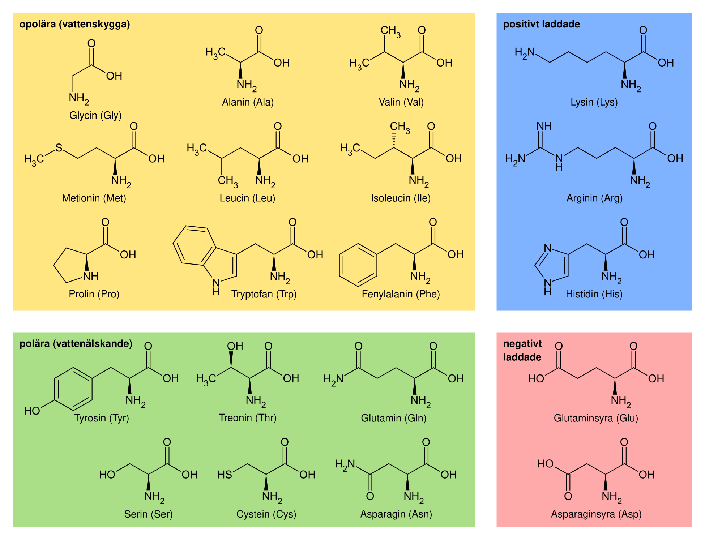
När ribosomen kopplar ihop två aminosyror bildas en peptidbindning mellan ryggradsdelarna, och samtidigt frigörs en vattenmolekyl. En kort kedja av aminosyror kallas en peptid, och en lång en polypeptid eller helt enkelt ett protein.
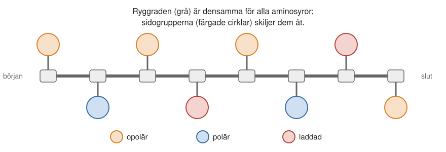
Helixar och flak
En utsträckt proteinkedja är lång och slak. Men i ett färdigt protein veckar den sig, och vissa mönster återkommer i nästan alla proteiner. Två av dem är särskilt vanliga:
- I en alfahelix (α-helix) vrider sig kedjan som en spiral, ungefär som en telefonsladd. Sidogrupperna sticker ut runt om.
- I ett betaflak (β-flak) ligger flera raka delar av kedjan bredvid varandra, som ett veckat papper.
Båda hålls ihop av vätebindningar mellan ryggradens atomer, samma slags bindningar som håller ihop baserna i DNA (Figur 1.11).
Ett vanligt protein innehåller ofta både helixar och flak, packade mot varandra till en kompakt helhet. De vattenskygga sidogrupperna, som undviker vatten, hamnar inåt, och de vattenälskande utåt mot vattnet. Att kedjan bara av sig själv, utifrån ordningen av aminosyror, hittar rätt form är en av biokemins mest fascinerande frågor.
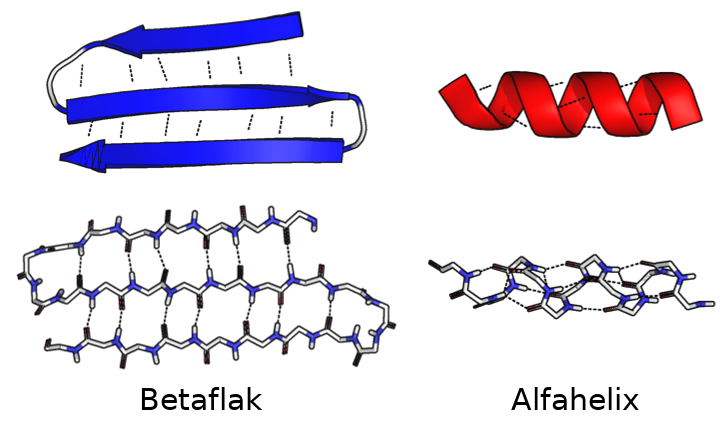
Därmed är cirkeln sluten. DNA bär ritningen, RNA för den vidare, ribosomen översätter den till en kedja av aminosyror, och kedjan veckar sig till ett protein som kan utföra sitt arbete i cellen. I nästa kapitel ser vi vad cellen gör med alla dessa proteiner: hur den bygger upp och bryter ned molekyler och hur den får sin energi (Kapitel 2).
1.11 Sammanfattning
- Livets byggstenar består av grundämnen som har bildats i stjärnor. Organiska molekyler som socker och aminosyror kan bildas utan hjälp av levande organismer, både i rymden och, som Millers experiment visade, under förhållanden som liknar den tidiga jordens.
- Allt levande består av celler. Prokaryota och eukaryota celler ser olika ut, men de grundläggande molekylära processerna är desamma.
- DNA lagrar informationen, proteinerna utför arbetet och RNA för informationen vidare. Informationen flödar från DNA via RNA till protein (den centrala dogmen).
- DNA är en dubbelspiral av två komplementära strängar. Baserna parar ihop sig med vätebindningar, A med T och G med C, och därför kan varje sträng användas som mall för att kopiera den andra (replikation).
- En gen är en bit av DNA som innehåller ritningen till ett protein. Människan har ungefär 20 000 gener. DNA innehåller också styrsignaler som avgör när generna ska användas.
- Vid transkriptionen skrivs en gen av till mRNA. RNA har sockret ribos i stället för deoxiribos och basen uracil i stället för tymin.
- Vid translationen läser ribosomen mRNA tre baser (ett kodon) i taget. tRNA med passande antikodon för dit rätt aminosyra. Den genetiska koden, som är i stort sett densamma i allt levande, anger vilket kodon som motsvarar vilken aminosyra.
- Ett protein är en kedja av aminosyror med en gemensam ryggrad och olika sidogrupper. Kedjan veckar sig, bland annat till alfahelixar och betaflak, och formen avgör vad proteinet kan göra.
1.12 Nyckelbegrepp
- atom – Den minsta delen av ett grundämne: en liten, positivt laddad kärna omgiven av negativt laddade elektroner.
- molekyl – En grupp atomer som hålls ihop av kemiska bindningar, till exempel en vattenmolekyl (H2O).
- cell – Livets minsta enhet: en liten behållare omgiven av ett membran, som kan ta upp näring, växa och dela sig. Allt levande består av en eller flera celler.
- cellkärna – Det avgränsade utrymme i eukaryota celler där DNA:t finns. Bakterier saknar cellkärna.
- nanometer – En miljarddels meter (en miljondels millimeter). En ribosom är 20–30 nanometer, ett vanligt protein omkring 5 nanometer.
- prebiotisk kemi – Läran om hur livets byggstenar kan ha bildats och reagerat innan det fanns liv på jorden.
- DNA – Deoxiribonukleinsyra. Den molekyl som bär arvsmassan: två komplementära strängar av nukleotider tvinnade till en dubbelspiral.
- RNA – Ribonukleinsyra. Nära släkt med DNA men oftast enkelsträngad, med sockret ribos och basen uracil i stället för tymin. För bland annat informationen från DNA till ribosomerna.
- nukleotid – Byggsten i DNA och RNA, bestående av ett socker, en fosfatgrupp och en kvävebas.
- kvävebas – Den del av en nukleotid som bär informationen. DNA har baserna adenin (A), guanin (G), cytosin (C) och tymin (T); i RNA ersätts tymin av uracil (U).
- basparning – Regeln att A alltid parar ihop sig med T (eller U i RNA) och G med C, med hjälp av vätebindningar.
- komplementär – Om två DNA-strängar: de passar ihop bas för bas enligt basparningsreglerna, så att sekvensen på den ena bestämmer den andra.
- vätebindning – En svag bindning där en väteatom på en molekyl dras till en syre- eller kväveatom på en annan. Håller ihop baspar i DNA och formen hos proteiner.
- centrala dogmen, den – Principen att informationen i cellen flödar från DNA via RNA till protein, och aldrig tillbaka från protein till DNA eller RNA. Att RNA ibland skrivs tillbaka till DNA (omvänd transkription) är ovanligt men bryter inte mot den.
- replikation – Kopiering av DNA. Strängarna dras isär och var och en används som mall för en ny sträng.
- transkription – Avskrift av en gen från DNA till RNA, utförd av enzymet RNA-polymeras.
- RNA-polymeras – Det enzym som läser av en gen och bygger en RNA-kopia av den (transkription).
- transkriptionsfaktor – Protein som sätter sig på DNA nära en gen och slår på (eller av) avskriften av den. Så styr cellen vilka gener som används.
- translation – Översättning av mRNA till protein på ribosomen.
- gen – En bit av DNA som innehåller ritningen till ett protein (eller till en RNA-molekyl). Människan har omkring 20 000 proteinkodande gener.
- kromosom – En mycket lång DNA-molekyl med många gener. Människan har 23 kromosompar.
- mRNA – Budbärar-RNA (eng. messenger RNA): en RNA-kopia av en gen som bär ritningen till ett protein till ribosomen.
- tRNA – Transfer-RNA: en liten RNA-molekyl som bär en bestämd aminosyra och med sitt antikodon känner igen rätt kodon på mRNA.
- ribosom – Stor molekylär maskin av RNA och proteiner, 20–30 nanometer stor, som tillverkar proteiner genom att läsa av mRNA.
- kodon – En grupp om tre baser på mRNA som motsvarar en aminosyra eller en startsignal eller stoppsignal.
- antikodon – De tre baser på ett tRNA som parar ihop sig med ett kodon på mRNA.
- genetiska koden – Tabellen över vilka kodon som motsvarar vilka aminosyror. I stort sett densamma i allt levande.
- protein – En kedja av aminosyror som har veckat ihop sig till en bestämd form. Proteinerna är cellens maskiner: enzymer, pumpar, kanaler, motorer och byggmaterial.
- peptid – En kort kedja av aminosyror, från ett par stycken upp till några tiotal. Gränsen mot protein är inte skarp.
- sidogrupp – Den del av en aminosyra som sticker ut från proteinkedjans ryggrad och som skiljer de 20 aminosyrorna åt. Kan vara opolär (vattenskygg), polär eller laddad.
- hydrofob – Vattenskygg. Hydrofoba molekyler och sidogrupper består mest av kol och väte, som fett, och undviker vatten. I ett protein samlas de i det inre.
- hydrofil – Vattenälskande. Hydrofila molekyler och sidogrupper är polära eller laddade och trivs bland vattenmolekylerna, till exempel på ett proteins yta.
- polär – Om en molekyl eller molekyldel med ojämnt fördelad laddning, som vatten. Polära ämnen kan bilda vätebindningar och trivs bland vattenmolekyler.
- oordnat protein – Protein, eller del av ett protein, som saknar en fast tredimensionell form. Binder ofta tillfälligt till andra proteiner och för samman dem.
- aminosyra – Proteinernas byggsten. Det finns 20 vanliga aminosyror, med samma ryggrad men olika sidogrupper.
- peptidbindning – Bindningen mellan två aminosyror i en proteinkedja. När den bildas frigörs en vattenmolekyl.
- alfahelix – En vanlig form i proteiner (α-helix) där kedjan vrider sig som en spiral, hållen ihop av vätebindningar i ryggraden. Tillsammans med betaflaket det vanligaste mönstret i proteiner.
- betaflak – Vanligt mönster i proteiner (β-flak) där utsträckta delar av kedjan ligger sida vid sida och hålls ihop av vätebindningar. Ritas ofta som breda pilar.
1.13 Testa dig själv
Flervalsfrågor
Välj ett svar och tryck på Rätta. Svarsalternativen visas i ny ordning varje gång.
Fundera vidare
1.1 Följ informationen från en gen till ett färdigt protein. Använd begreppen transkription, mRNA, ribosom, kodon, tRNA och translation.
1.2 Watson och Crick skrev att DNA-strukturen genast antydde hur arvsmassan kan kopieras. Förklara varför.
1.3 DNA beskrivs ofta som cellens hårddisk och proteinerna som dess maskiner. Hur långt räcker jämförelsen, och var haltar den?
1.4 En forskare känner bara DNA-sekvensen för en gen. Hur kan hon ta reda på hur proteinet ser ut, och vad kan hon inte veta utan vidare?
Hjälp oss att förbättra kapitlet
Hittade du ett fel, eller något som var svårt att förstå? Skicka ett förslag i förslagsformuläret (kräver inloggning med SU-konto). Lärarna läser alla förslag inför nästa version av boken.
1.14 Läs mer
- Deoxiribonukleinsyra och Genetiska koden på svenska Wikipedia.
- Miller–Urey experiment på engelska Wikipedia, om experimentet och vad senare försök har visat.
- Ribosomal Subunits, Molecule of the Month på PDB-101 (på engelska), med bilder av David S. Goodsell.
- Nobelpriset i fysiologi eller medicin 1962, för upptäckten av DNA:s struktur (på engelska).
- Nobelpriset i kemi 2009, för kartläggningen av ribosomens struktur och funktion (på engelska).